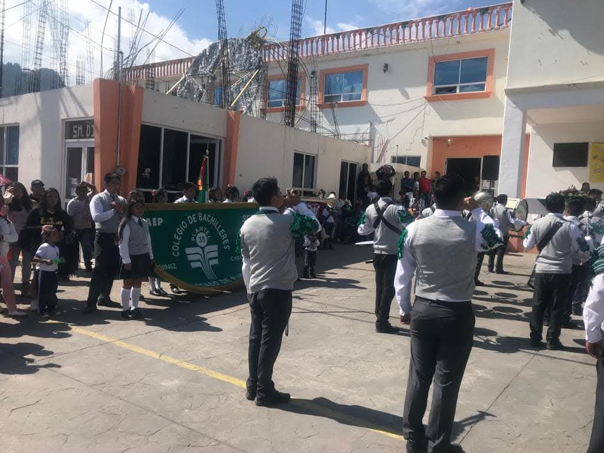
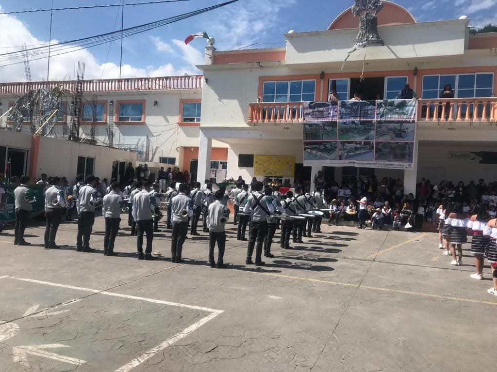
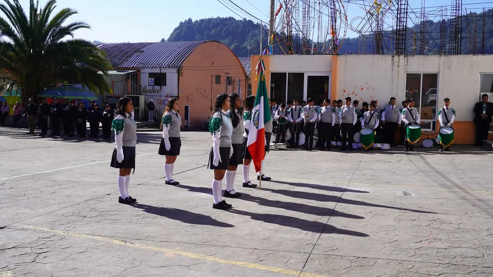
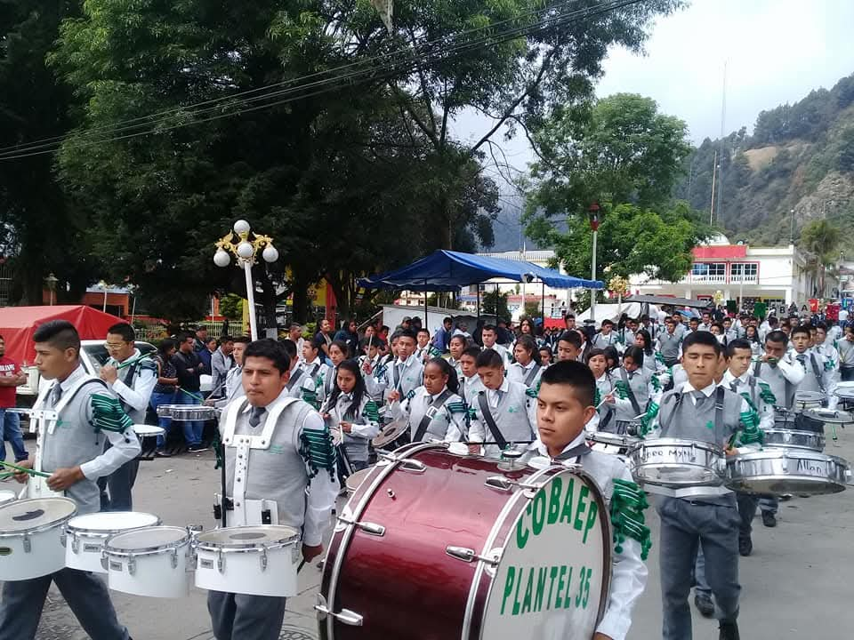
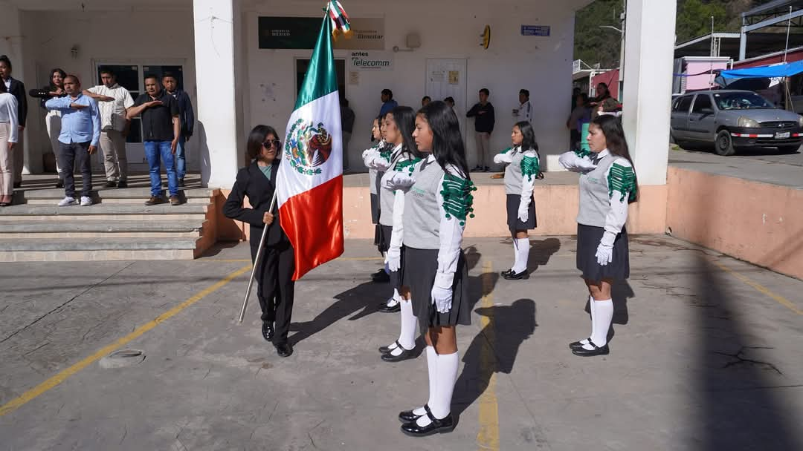
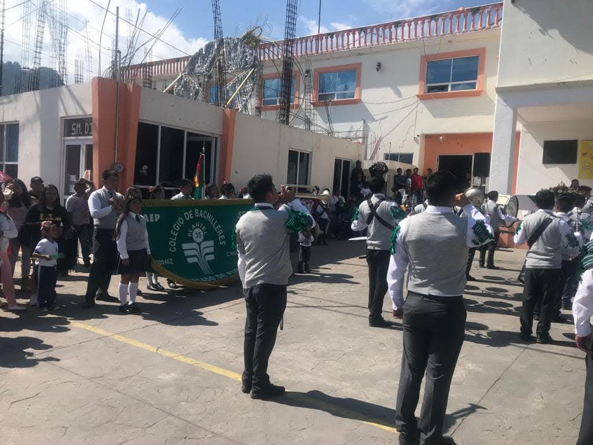
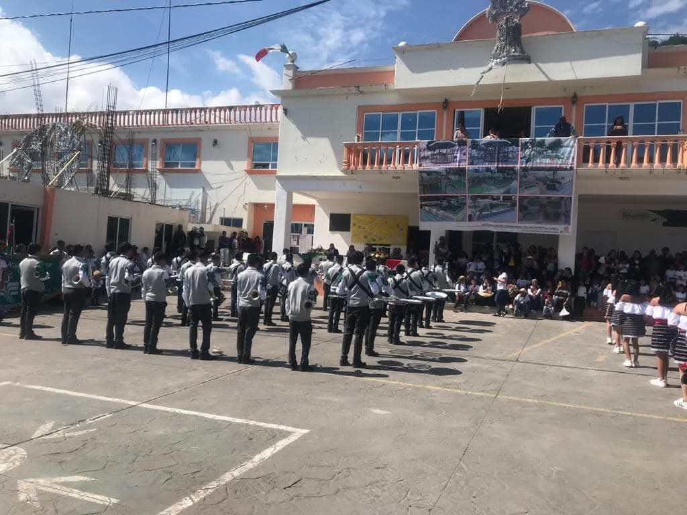
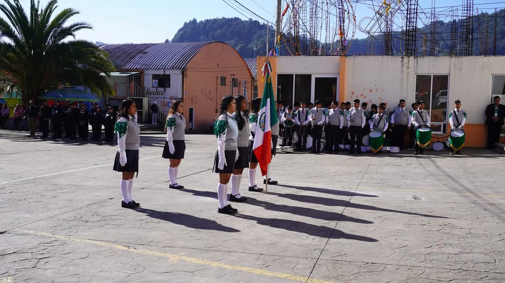
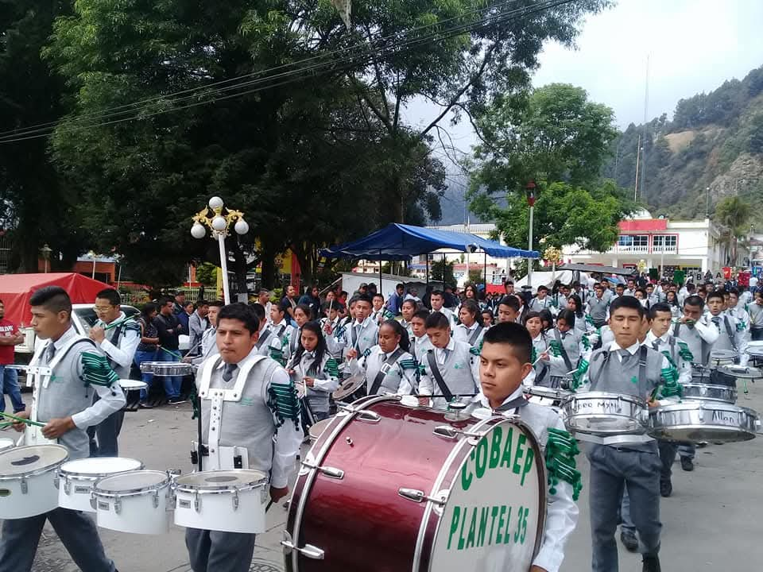
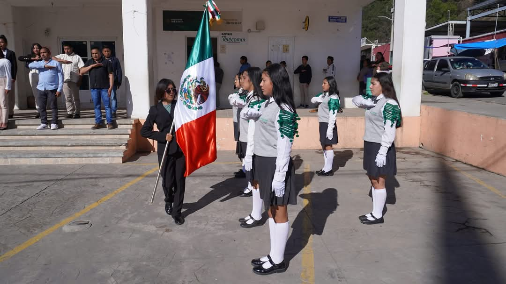

Bienvenidos
La Banda de Guerra es una tradición que combina disciplina, coordinación y espíritu de equipo. A través de los tambores, cornetas y movimientos precisos, representamos el honor y la dedicación de nuestras instituciones.
Banda de Guerra
Las bandas de guerra tienen sus orígenes en las formaciones militares, donde se utilizaban para transmitir órdenes y mantener el ritmo durante las marchas. Con el tiempo, esta tradición se ha convertido en un símbolo de identidad y orgullo en instituciones educativas y militares.
Galería
 








